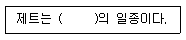
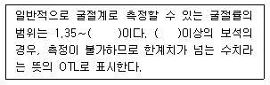

보석감정사(기능사) (2006-01-22 기출문제)
1과목: 보석학일반
1. 일반적인 월별 탄생석의 연결이 잘못된 것은?
- 6월 -진주
- 7월 - 루비
- 11월-토파즈
- 10월 -페리도트
(정답률: 91%)

2. 금의 함량이 91.7%인 합금금의 품위 표시는?
- 24K
- 23K
- 22K
- 21K
(정답률: 89%)
3. 유색효과가 없거나 거의 없는 무색의 투명 또는 아투명한 오팔은?
- 젤리 혹은 워터오팔
- 파이어 오팔
- 블랙오팔.
- 결정 오팔
(정답률: 98%)
4. ( )안에 들어갈 내용으로 적합한 것은?

- 유리
- 갈탄
- 수지
- 플라스틱
(정답률: 95%)
5. 다음 보석광상 중 다른 광상에 비하여 비교적 크고 질이 좋은 보석들이 산출되는 광상, 즉 보석 산출상 가장 중요한 광상은?
- 열수 광상
- 퇴적 광상
- 페그마타이트 광상.
- 접촉 변성 광상
(정답률: 61%)
6. 다음중 Ivory(상아)의 재료로 잘 쓰이지 않는 것은?
- 코끼리 상아
- 하마 이빨
- 기린뼈
- 향유고래 이빨
(정답률: 86%)
7. 다음 중 미세한 결정으로 구성되어 현미경으로도 입자를 볼수 없는 은정질(隱晶質)의 보석은?
- 터쿼이즈
- 헤마타이트
- 제이다이트
- 로도크로사이트
(정답률: 33%)
8. 다음 중 향수, 스프레이 , 화장품, 기타 산성용액에 약하여 변색이나 광택이 사라질 수 있는 보석은?
- 진주
- 루비
- 다이아몬드
- 비취
(정답률: 93%)
9. 여러 가지 보석에 적용되는 가장 안전한 세척 방법은?
- 초음파 세척기
- 화학약품의 이용
- 따뜻한 물과 순한 비누
- 산용액에 넣고 끓이기
(정답률: 89%)
10. 진주를 구성하는 여러 물질 중에서 주된 구성 물질은?
- 탄산칼슘
- 콘키올린
- 수분
- 유기물질
(정답률: 82%)
11. 은 92.5% 구리 7.5%의 합금을 무엇이라고 하는가?
- 브리티니아 실버 (britannia silver)
- 멕시칸 실버 (mexican silver)
- 스터링 실버 (sterling silver)
- 코인 실버 ( coin silver)
(정답률: 91%)
12. 상부에 무색투명한 수정이나 유리로 만든 둥근 돔 형태의 덮개. 중간에 오팔, 하부에는 흑색 오닉스 또는 모암을 접합한 것은?
- 오팔 트리플릿
- 오팔 더블릿
- 합성 오팔 트리플릿
- 합성 오팔 더블릿
(정답률: 72%)
13. 방지의 안지름 측정 오차 허용범위는?
- ± 0.1mm
- ± 0.3mm
- ± 0.5mm
- ± 1.0mm
(정답률: 61%)
14. 다음 중 하나의 광물이 아니고 2종 이상의 광물로 되어 있는 집합체는?
- 크리소프레이스
- 로도크로사이트
- 라피스라줄리
- 칼사이트
(정답률: 88%)
15. 백금 (Pt)에 대한 설명 중 옳지 않은 것은?
- 순도표시는 천분율(1/1000)을 사용한다.
- 왕수에 녹인다.
- 화이트 골드라고도 부른다.
- 순도에 따라 A, B, C, D의 4등급으로 분류된다.
(정답률: 70%)
2과목: 다이아몬드감정법
16. 모조석의 설명 중 잘못된 것은?
- 유리, 플라스틱이 있다.
- 접합석도 이에 속한다.
- 천연과 외관상 비슷하나 물리적 성질, 화학성분, 원자구조가 다르다.
- 합성루비도 루비의 모조석이다.
(정답률: 78%)
17. 다음 중 선택흡수의 결과에 의한 특수현상이 나타나는 보석은?
- 수정
- 진주
- 알렉산드라이트
- 캐츠아이
(정답률: 67%)
18. 합성 큐빅지르코니아를 생성하는 합성 방법은?
- 수열법
- 플럭스성장법
- 화염 용융법
- 스컬 용융법
(정답률: 95%)
19. 다이아몬드가 생성될 때 화학성분의 순도에 따라 가장 커다란 영향을 받는 요소는?
- 컬러
- 무게
- 형태
- 크기
(정답률: 95%)
20. 마스터 스톤의 조건으로 옳지 않은 것은?
- 중량은 0.30 - 0.40 CT의 범위가 적당하다.
- SI2 이하의 뚜렷한 그레이드가 좋다.
- 형광성이 강한 돌을 피한다.
- 황색이외의 바탕색이 있는 돌을 피한다.
(정답률: 86%)
21. 다음 중 적색과 녹색으로 작도하는 것은?
- 캐비티, 클라우드
- 핀포인트, 인클루젼
- 내추럴, 엑스트라 패싯
- 노트, 캐비티, 인덴티드 내추럴
(정답률: 87%)
22. Z 컬러보다 더 짙은 노란색 다이아몬드의 컬러 등급은?
- Z컬러
- 옐로우 컬러
- 팬시 옐로우 컬러
- 프리미어 컬러
(정답률: 97%)
23. 10배 확대된 상태에서 뚜렷하게 보이며, 육안으로 겨우 보이는 큘릿의 크기는?
- 작다
- 보통
- 크기
- 약간 크다
(정답률: 54%)
24. 1CT은 약 몇 그레인(grain)인가?
- 1그레인
- 4그레인
- 100그레인
- 142그레인
(정답률: 93%)
25. 연마된 다이아몬드에서 발견되는 내추럴에 대한 설명과 무관한 것은?
- 연마흔적 중의 하나이다
- 일종의 성장마크이다.
- 주로 거들 부위에서 나타난다.
- 삼각형의 무늬가 나타나기도 한다.
(정답률: 54%)
26. 잘 연마된 다이아몬드에서 나오는 빛이라고 볼 수 없는 것은?
- 신틸레이션 (scintillation)
- 브릴리언시 (brilliance)
- 디스퍼션 (dispersion)
- 오리엔트 (orient)
(정답률: 84%)
27. 다이아몬드 표면에 도마뱀 껍질 광택이 생기는 이유는?
- 폴리쉬하기 어려운 방향으로 연마한 경우
- 연마된 다이아몬드에 원석 표명이 남아있는 경우
- 대칭적으로 면을 추가해서 만든 경우
- 다이아몬드끼리 서로 마찰되어 마모된 경우
(정답률: 63%)
28. 테이블이 정팔각형을 이루지 않았을 때의 표기법은?
- T/OC
- T/OCT
- O/R
- EF
(정답률: 59%)
29. 마스터 아이효과(Master-eye-effect)란?
- 동일한 컬러라도 우측의 것은 더 좋게 보인다.
- 동일한 컬러라도 좌측의 것이 더 좋게 보인다.
- 동일한 컬러라도 우측의 것이 형광성을 보인다.
- 마스터 아이효과는 다이아몬드에 적용되지 않는다.
(정답률: 52%)
30. 다음 중 클레프트(cleft)가 있는 팬시형태의 다이아몬드는?
- 하트형
- 에메랄드형
- 마퀴즈형
- 페어형
(정답률: 97%)
3과목: 보석감별법
31. 클래러티(clarity)등급에서 블레미시(blemishes)로 간주되는 것은?
- 내추럴(natural)
- 핀포인트(pin point)
- 캐비티(cavity)
- 니들(needle)
(정답률: 83%)
32. GIA색 등급 중 가장 최상의 색등급은?
- 10
- G
- D
- A+
(정답률: 94%)
33. GIA기준으로 2개의 세분화된 클래러티(투명도)분류를 가진 것은?
- SI, VS, VVS
- I, VS, VVS
- I, IF,SI
- IF, SI, VS
(정답률: 93%)
34. 다음 중 경도가 가장 높은 보석은?
- 퀴츠
- 호박
- 페리도트
- 투어멀린
(정답률: 56%)
35. 굴절계 사용시 필요하지 않는 보조 기구는?
- 굴절액
- 단색광
- 백색광
- 집게
(정답률: 70%)
36. 자외선 형광 검사시 배경의 상태는?
- 밝은 백색
- 회색
- 적색
- 흑색
(정답률: 79%)
37. 편광 검사 중 돌을 회전할 때는 늘 밝은 상태이면, 그 돌은?
- 이상 복굴절
- 단굴절
- 복굴절
- 잠정질
(정답률: 76%)
38. 광물에서 생길 수 있는 최고의 광택으로 헤마타이트, 파이라이트 등에 나타나는 효과는?
- 금강 광택
- 금속 광택
- 유리 광택
- 견사 광택
(정답률: 79%)
39. 다음 중 비중 3.32 용액에서 다르게 반응하는 것은
- 적색 투어멀린
- 히데나이트
- 모거나이트
- 루비
(정답률: 69%)
40. 다음 분광기의 용도에 대한 설명 중 틀린 것은?
- 광학성 판별
- 색의 원소 판별
- 일부 천연과 합성 보석의 판별
- 염색 보석의 판별
(정답률: 49%)
41. 분광기 검사 대상이 되는 빛의 파장 영역은?
- γ선
- 가시광선
- 적외선
- α선
(정답률: 81%)
42. 다음 중( )안에 들어갈 수치는?

- 1.35
- 1.50
- 1.75
- 1.81
(정답률: 88%)
43. 다음 중 각 비중액의 지시석으로 적당한 것이 아닌 것은?
- 2.57 - 아마조나이트와 칼세도니
- 2.62 - 칼세도니와 쿼츠
- 2.67 - 합성 에메랄드와 칼사이트
- 3.⑤ - 안달루사이트와 스포듀민
(정답률: 44%)
44. 굴절률 1.62 범위로서 샤토얀시 효과가 나타나는 보석은?
- 수정
- 베릴
- 다이옵사이드
- 투어멀린
(정답률: 33%)
45. 다음 보석감별 검사 중 파괴검사가 아닌 것은?
- 조흔검사
- 화학검사
- 열전도률 검사
- 핫 포인트 검사
(정답률: 73%)
4과목: 보석가공기법
46. 다음 중 첼시필터로 보았을 때 달리 보이는 녹색 보석은?
- 합성 에메랄드
- 크리소프레이스
- 염색녹색쿼츠
- 제이다이트
(정답률: 38%)
47. 투과법은 어떤 돌에서 사용하는 방법인가?
- 투명에서 반투명
- 아투명에서 불투명
- 아반투명
- 불투명
(정답률: 94%)
48. 편광기를 통하여 보석의 광학특성을 관찰할 때 보석은 다음 중 어느 위치에 있어야 하는가?
- 폴라라이저 밑에
- 애널라이저 위에
- 폴라라이저와 애널자리저의 중간에
- 아무위치나 상관없다.
(정답률: 93%)
49. 염색된 흑진주를 검출하는데 질산용액을 사용하기도 한다. 틀린 것은?
- 희석용액을 사용한다.
- 남은 질산은 닦지 않아도 된다.
- 눈에 잘 뛰지 않는 부분에 한다.
- 면봉을 사용하는 것이 좋다.
(정답률: 91%)
50. 보석의 형광검사는?
- 감별의 결정적인 증거이다.
- 결정적 증거는 아니지만 감별의 지표가 될 수 있다.
- 검사할 가치가 없다.
- 해당 종은 모드 동일하다.
(정답률: 91%)
51. 보석을 정면에서 보았을 때 크라운 부분에서 백색광이 무지개색으로 보이는 광학현상을 무엇이라 하는가?
- 분산
- 굴절
- 광택
- 형광
(정답률: 89%)
52. 텀블링 연마의 특징에 대한 설명 중 틀린 것은?
- 한 번 가동이 되면 일정한 기간 동안 주의를 기울이지 않아도 된다.
- 작은 크기의 불투명한 원석은 적합하지 않다.
- 어떠한 종류나 형태의 보석이든지 연마가 가능하다.
- 실용성이 없는 조각(chip)도 실용성이 있는 돌로 만들 수 있다.
(정답률: 57%)
53. 표준 브릴리언트형의 크라운 면수는?
- 16면
- 24면
- 33면
- 38면
(정답률: 91%)
54. 다음 조각보석 중 거들 가장자리의 아래가 음각으로 조각된 것은?
- 인탈이오
- 카메오
- 큐벨
- 일루젼
(정답률: 73%)
55. 다음 그림에서 "A"면의 명칭은 무엇인가? (크라운면에서 마름모 사각형 )
- 스타면
- 베즐면
- 테이블면
- 파빌리온면
(정답률: 69%)
56. 보석 가락지 만들기 순서가 옳은 것은?
- 절단 - 외경작업 - 외경 그라인딩 - 내경작업 - 광택 - 샌딩 - 세척
- 절단 - 내경작업 - 외경작업 - 외경 그라인딩 - 샌딩 - 광택 - 세척
- 내경작업 - 외경작업 - 절단 - 외경 그라인딩 - 세척- 광택 - 샌딩
- 외경작업 - 내경작업 - 외경 그라인딩 - 절단 - 광택 - 샌딩 - 세척
(정답률: 90%)
57. 텀블링 연마 작업에서 절삭, 긁기, 광택, 작품분리 등의 기능을 하는 것은?
- 광택제
- 카보런덤
- 합성세제
- 미디어
(정답률: 50%)
58. 구슬 중앙에 구멍을 뚫어 줄에 꿰어 연결한 목걸이는?
- 완전형 목걸이
- 단체형 목걸이
- 연결형 목걸이
- 연주형 목걸이
(정답률: 74%)
59. 난발 난물림의 특징을 설명한 것 중 틀린 것은?
- 난발 그 자체로 장식효과가 있다.
- 어떤 형태의 보석이라도 물릴 수 있다.
- 보석의 형태를 최대한 낼 수 있으며 섬세한 느낌을 준다.
- 빛의 반사효과가 적은 편이다.
(정답률: 85%)
60. 다음 중 어두운 색의 돌을 엷게 하여 밝게 보이고자 할 때 알맞은 연마형은?
- 단순 캐보션
- 평 캐보션
- 오목 캐보션
- 역 캐보션
(정답률: 79%)